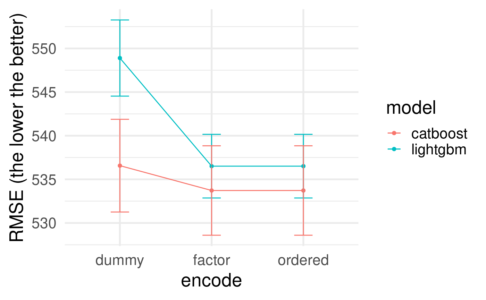

vignettes/working-with-lightgbm-catboost.Rmd
working-with-lightgbm-catboost.Rmdlibrary(tidymodels) library(treesnip) data("diamonds", package = "ggplot2") # vfold resamples diamonds_splits <- vfold_cv(diamonds, v = 5)
Both lightgbm and catboost are engines for parsnip::boost_tree(). All main hyperparameters are available, except loss_reduction for catboost.
model_spec <- boost_tree(mtry = 5, trees = 500) %>% set_mode("regression") # model specs lightgbm_model <- model_spec %>% set_engine("lightgbm", nthread = 6) catboost_model <- model_spec %>% set_engine("catboost", nthread = 6) #workflows lightgbm_wf <- workflow() %>% add_model(lightgbm_model) catboost_wf <- workflow() %>% add_model(catboost_model)
Differently from xgboost, lightgbm and catboost deals with nominal columns natively. No step_dummy() or any other encoding required.
In fact, avoiding step_dummy() seems to be a good idea when using lightgbm or catboost.
rec_ordered <- recipe(price ~ ., data = diamonds) rec_dummy <- rec_ordered %>% step_dummy(all_nominal()) rec_factor <- rec_ordered %>% step_unorder(all_nominal()) # glimpse(juice(prep(rec_factor))) lightgbm_fit_ordered <- fit_resamples(add_recipe(lightgbm_wf, rec_ordered), resamples = diamonds_splits) lightgbm_fit_dummy <- fit_resamples(add_recipe(lightgbm_wf, rec_dummy), resamples = diamonds_splits) lightgbm_fit_factor <- fit_resamples(add_recipe(lightgbm_wf, rec_factor), resamples = diamonds_splits) catboost_fit_ordered <- fit_resamples(add_recipe(catboost_wf, rec_ordered), resamples = diamonds_splits) catboost_fit_dummy <- fit_resamples(add_recipe(catboost_wf, rec_dummy), resamples = diamonds_splits) catboost_fit_factor <- fit_resamples(add_recipe(catboost_wf, rec_factor), resamples = diamonds_splits)
bind_rows( collect_metrics(lightgbm_fit_ordered) %>% mutate(model = "lightgbm", encode = "ordered"), collect_metrics(lightgbm_fit_dummy) %>% mutate(model = "lightgbm", encode = "dummy"), collect_metrics(lightgbm_fit_factor) %>% mutate(model = "lightgbm", encode = "factor"), collect_metrics(catboost_fit_ordered) %>% mutate(model = "catboost", encode = "ordered"), collect_metrics(catboost_fit_dummy) %>% mutate(model = "catboost", encode = "dummy"), collect_metrics(catboost_fit_factor) %>% mutate(model = "catboost", encode = "factor") ) %>% filter(.metric == "rmse") %>% ggplot(aes(x = encode, y = mean, group = model, colour = model)) + geom_point() + geom_errorbar(aes(ymin = mean - std_err, ymax = mean + std_err), width = 0.2) + geom_line() + labs(y = "RMSE (the lower the better)") + theme_minimal(20)
